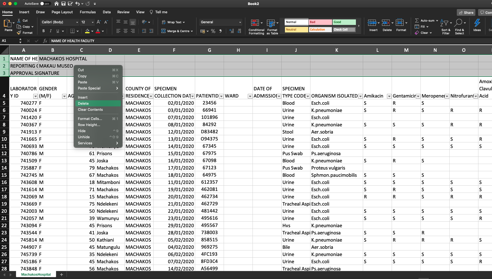
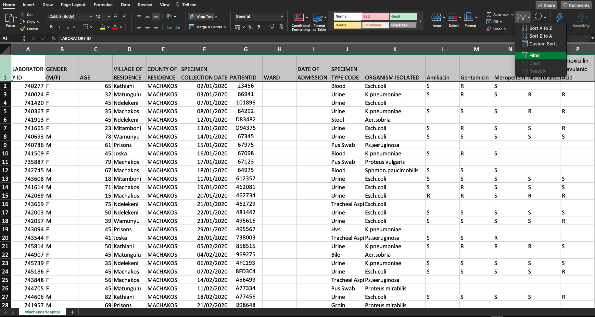
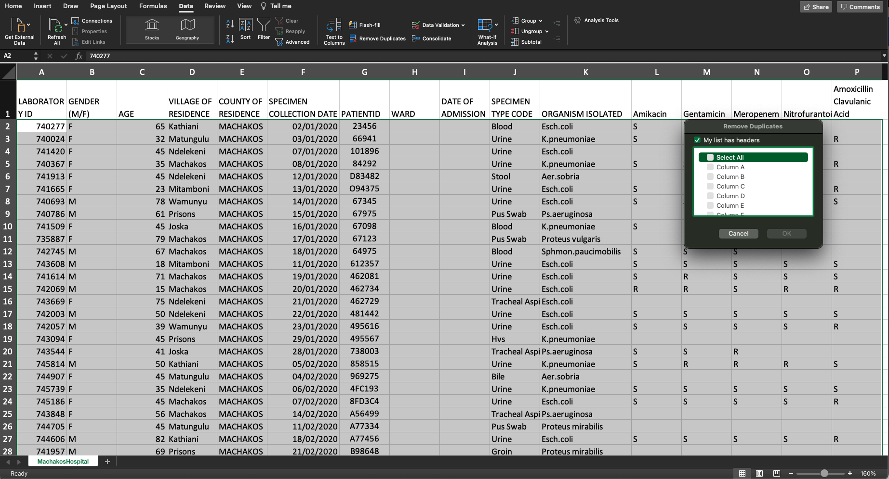
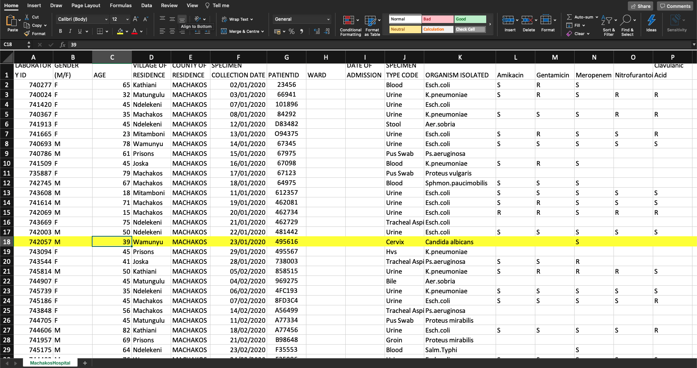

Chapter 4 Data cleaning
Data should be cleaned for the purpose of analysis.
Data cleaning entails deleting unnecessary rows or columns that do not contain any data, removing duplicates, filtering data to remove inaccurate data etc.
For example, to delete the first 4 rows of the excel file which do not contain any meaningful data, highlight the rows, right click and then click on the delete key from the dialogue box that appears.

4.1 Data cleaning (filter)
To create filters in Excel, highlight the top row (contains variables of the data/ column names), on the upper right of the tool bar, click editing and then sort and filter to click on the filter button. You will have small arrows on each column on the first rows as shown below. You can try and create filters from your data.

4.2 Data cleaning (removing duplicates)
To check for duplicates, click on the tool bar, select data then data tools and there you will see “Remove Duplicates”. Once you click on it, a dialogue appears that requires you to select a unique column to be used to identify duplicates. Since all columns will be selected, click on “unselect all” then select the unique column and click OK. The unique column here has the LaboratoryID that is different for each specimen.

4.3 Data cleaning (validation)
To ensure that all entries are correct. Some of the things to check might be if the samples collected are valid, if the dates are correct etc. For example, in this data, we have seen an erroneous entry of a cervix sample connected from a Male patient. That is a wrong entry and it should be corrected by counter checking the consent form or the original data collected. If you are unsure, its always good practice to delete it.In the example below, we are going to delete the entry.
